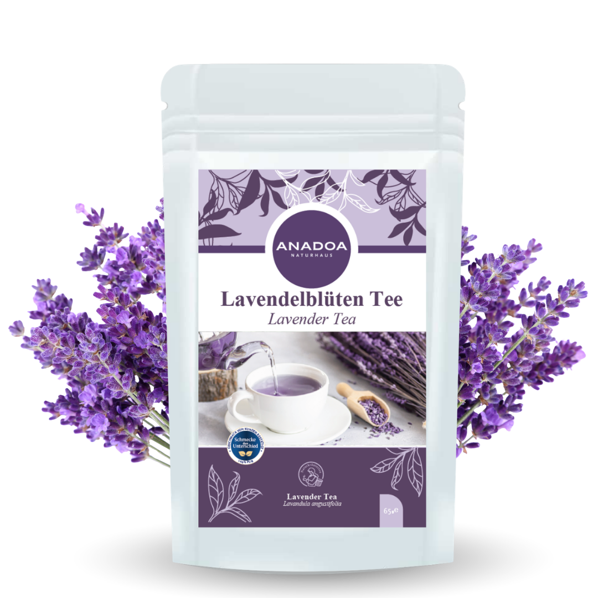

Lavendeltee (Lavanta Çayı) – Das Erbe der purpurnen Felder
Lavendel (Lavandula angustifolia) ist in der Geschichte der Pflanzenheilkunde weitaus mehr als nur ein Duft für Seifen oder Kleiderschränke. Schon im antiken Rom wurde Lavendel (abgeleitet vom lateinischen "lavare" = waschen) als essenzieller Badezusatz für Patrizier geschätzt, um nicht nur den Körper, sondern auch die rastlose Seele von Anspannung reinzuwaschen. In der Türkei, wo das Kraut "Lavanta" genannt wird, sind weite Felder im Sommer in ein leuchtendes Purpur getaucht.
Für den Premium Lavendeltee von Anadoa Naturhaus verwenden wir nicht das minderwertige, holzige Kraut, sondern ausschließlich die hocharomatischen, winzigen Blütenkelche der Pflanze. Diese Blüten speichern in winzigen Öldrüsen die gesamte Essenz der ätherischen Öle. Durch schonende Handernte im Frühsommer stellen wir sicher, dass diese empfindlichen Ölkapseln intakt bleiben, bis sie in Ihrer Teetasse mit heißem Wasser in Berührung kommen.
Tiefenentspannung und Stressabbau dank Lavendeltee
Der wichtigste aktive Bestandteil im echten Lavendel ist Linalool, ein hochkomplexer alkoholischer Bestandteil des ätherischen Öls. Moderne klinische Studien zur Aromatherapie und Phytomedizin haben nachgewiesen, dass Linalool in der Lage ist, im Gehirn bestimmte Neurotransmitter (wie GABA) zu modulieren. GABA wirkt im zentralen Nervensystem als der wichtigste "Brems-Botenstoff".
Wenn Sie gestresst sind, das Gefühl haben, dass Ihre Gedanken rasen und Sie nicht abschalten können, blockiert Lavendeltee sanft die Übererregbarkeit des Nervensystems. Ein abendliches Ritual mit Lavendeltee wirkt stark anxiolytisch (angstlösend) und sedierend (beruhigend). Es bereitet den Körper auf eine Phase der Ruhe vor und ist oft die sanfteste und natürlichste Lösung für stressbedingte Einschlaf- und Durchschlafstörungen.
Krampflösende Wirkung auf den Verdauungstrakt dank Lavendeltee
Stress schlägt vielen Menschen sprichwörtlich "auf den Magen". Wenn das vegetative Nervensystem im Alarmzustand ist, verkrampft sich die glatte Muskulatur im Magen-Darm-Trakt, was zu nervösen Blähungen, Übelkeit oder Reizdarmsyndromen (IBS) führen kann.
Die spasmolytischen (krampflösenden) Eigenschaften der Lavendelblüten wirken nicht nur im Gehirn, sondern auch direkt lokal im Darm. Eine warme Tasse Lavanta-Tee nach dem Essen oder in akuten Stresssituationen entspannt die Magenmuskulatur spürbar, fördert den Abfluss von aufgestauten Verdauungssäften und löst schmerzhafte Blähungen sanft auf.
Befreiung der Atemwege durch Aromatherapie dank Lavendeltee
Die Wirkung von Lavendeltee beginnt bereits vor dem ersten Schluck. Die hochflüchtigen ätherischen Öle steigen mit dem Wasserdampf aus der Teetasse auf. Das langsame Einatmen dieses Dampfes (eine passive Inhalation) gelangt direkt über die Riechnerven in das limbische System (das emotionale Zentrum des Gehirns) und signalisiert fast augenblicklich: Entspannung.
Gleichzeitig wirken die antiseptischen Eigenschaften des Lavendels leicht reinigend auf die Schleimhäute in Nase und Rachen, was ihn auch zu einem wunderbaren Begleittee bei leichten, stressbedingten Erkältungen oder Spannungskopfschmerzen macht.
Die ideale Zubereitung und Anwendung von Lavendeltee
Lavendel ist extrem dominant im Geschmack. Wer hier überdosiert, empfindet den Geschmack oft als zu parfümiert oder "seifig". Die richtige Dosierung ist der Schlüssel.
Die perfekte Zubereitung: Verwenden Sie für eine Tasse maximal 1 bis 1,5 Teelöffel der losen Blüten. Übergießen Sie diese mit heißem, aber leicht abgekühltem Wasser (ca. 85-90°C), da kochendes Wasser die extrem flüchtigen Öle zerstören würde. Decken Sie die Tasse zwingend ab! Lassen Sie den Tee für 5 bis maximal 8 Minuten ziehen. Für ein besonders rundes Geschmackserlebnis empfehlen wir, den Lavendeltee mit einem Teelöffel Honig zu süßen und vielleicht eine Scheibe frische Zitrone hinzuzufügen – das hellt den leicht herben Geschmack perfekt auf.
Warum der Lavendeltee von Anadoa die beste Wahl ist
Lavendel ist nicht gleich Lavendel. Ein Großteil der weltweit gehandelten Ware für Tees besteht aus Hybrid-Pflanzen (Lavandin), die zwar viel Ertrag bringen, aber medizinisch weitgehend wertlos sind und extrem kampferartig schmecken.
Wir verwenden ausschließlich echten, wildwachsenden anatolischen Berglavendel. Nur diese Sorte besitzt das milde, süßlich-blumige Aromaprofil und die hohen Linalool-Werte, die für eine echte, therapeutische Entspannung notwendig sind. Sie erhalten bei uns reine, tiefblaue Blüten ohne jegliche Stängel- oder Blattbeimischungen.
Häufig gestellte Fragen (FAQ)
Schmeckt der
Tee nicht wie Seife?
Lavendel hat ein sehr intensives, blumiges Aroma. Das Gefühl, er würde nach 'Seife' schmecken, entsteht fast immer durch eine zu hohe Dosierung oder eine zu lange Ziehzeit. Wenn Sie sich an unsere Dosierempfehlung halten (max. 1,5 TL) und ihn leicht süßen, schmeckt er wunderbar kräutrig-süß.
Sollte ich
Schopflavendel (Karabaş) oder diesen Lavendeltee wählen?
Schopflavendel (Karabaş) ist viel herber, kampferartiger und wilder. Er wird in Anatolien als starkes Heilmittel geschätzt. Dieser klassische Lavendeltee hier (Lavanta) ist weitaus sanfter, blumiger und geschmacklich für den Alltag viel angenehmer.
Wann ist die
beste Zeit für diesen Tee?
Aufgrund seiner stark entspannenden Wirkung ist der späte Abend, etwa 1 bis 2 Stunden vor dem Schlafengehen, die absolute Bestzeit für diesen Tee.
Dürfen
Kinder Lavendeltee trinken?
Ja, dünn aufgebrühter, leicht gesüßter Lavendeltee ist ein hervorragendes, sanftes Mittel, um überdrehte Kinder am Abend zur Ruhe kommen zu lassen.
Kann ich die
Blüten auch anderweitig verwenden?
Absolut. Sie können die losen Blüten in kleine Stoffsäckchen füllen und in den Kleiderschrank legen, oder Sie geben eine Handvoll in ein entspannendes, heißes Vollbad.